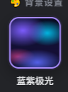
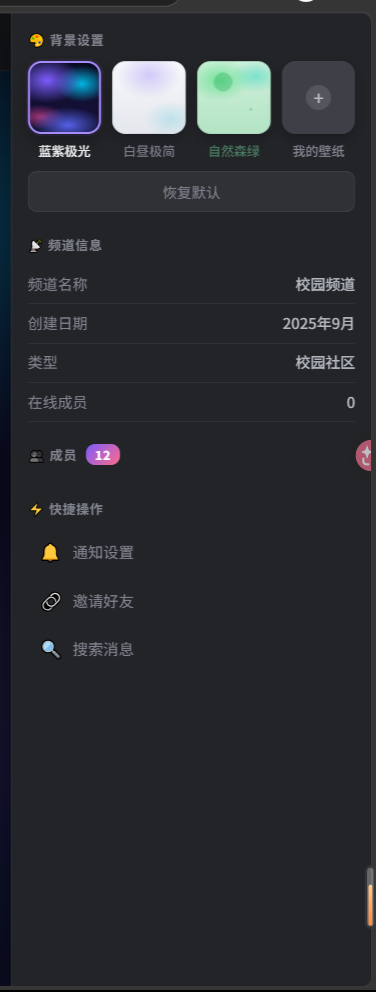
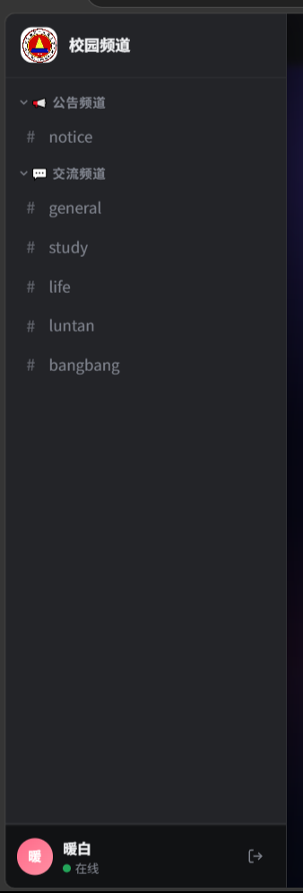

将「蓝紫极光」默认主题改为星空风格，并解决全站主题覆盖不全的问题。

蓝紫极光预览小图

背景设置弹窗

左侧频道抽屉
2025 年聊天/社交 App 背景不再用纯黑，而是「深海军蓝/紫黑」作为太空底色，叠加低透明度白色光点模拟星星，配合少量流星或星云光晕，降低视觉疲劳。
在星空背景上覆盖 10-20px 背景模糊 + 半透明深色遮罩的卡片，保证文字可读，同时让星光从边缘透出，营造深邃感。
星星不是静态的：大小呼吸、亮度闪烁、偶尔划过流星。使用 Canvas 绘制 150-300 颗星星，帧率可控， prefers-reduced-motion 下自动暂停。
参考微信/夜视频聊天等定制主题，把「星空」作为聊天场景，配合水晶质感图标、流星划过消息气泡，增强沉浸感。
用 data-theme="starry" 的 CSS 变量控制：深蓝紫黑渐变 + Canvas 星光层。保留现有的 #main-bg 和 #main-dots，把光点改为白色/蓝色星光，增加流星效果。
var(--bg-surface)请确认以下两点，我再开始改代码：
1默认主题用哪个方向？A 深空星轨 / B 银河紫梦 / C 清新星夜
2星空背景要不要动态流星？要（电影感）/ 不要（只闪烁星星）
另外我会同步排查「主题没全覆盖」的组件，把头像弹窗、通知下拉、loading 等写死颜色的地方统一改成主题变量。